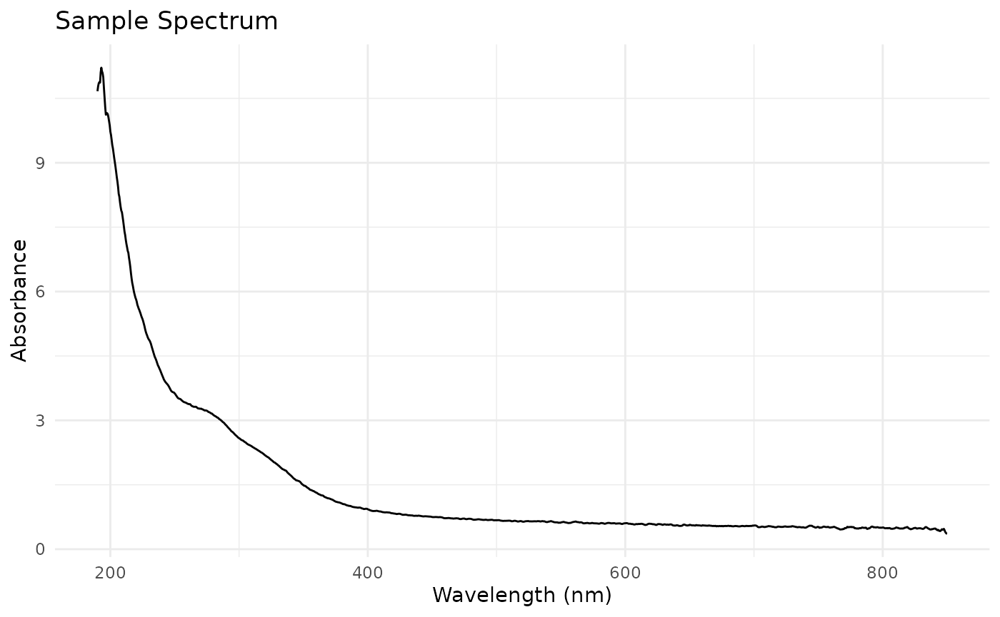
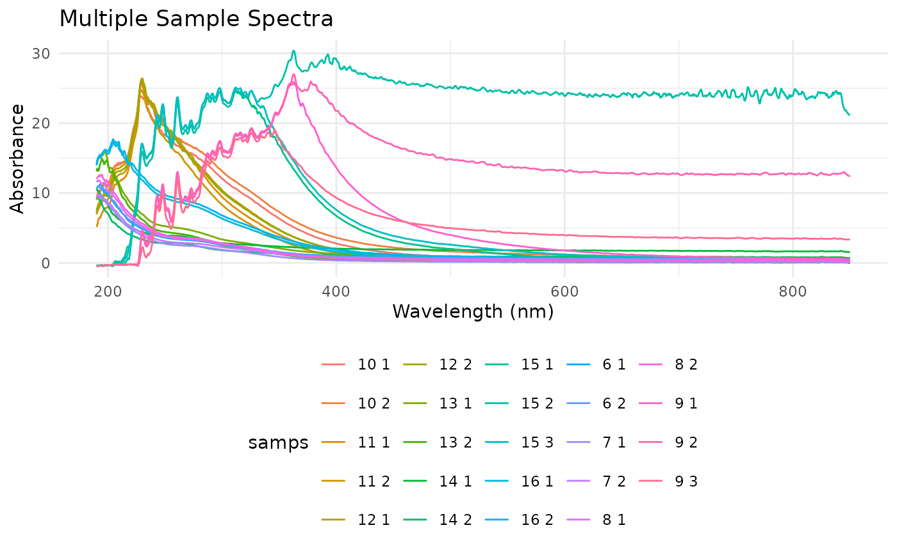

Importing and Processing NanoDrop Spectral Data
Source:vignettes/nanodrop-data-import.Rmd
nanodrop-data-import.RmdIntroduction
The nanodRop package provides tools for importing and
processing spectral data from NanoDrop One spectrophotometers. This
vignette demonstrates how to use the main functions to read, parse, and
analyze spectral data.
Reading NanoDrop Data
The primary function for importing data is
read_nanodrop(). It takes a filepath to a TSV file exported
from NanoDrop and processes it into a tidy data format.
# Load the package
library(nanodRop)
# Read a sample NanoDrop TSV file
# In this example, we'll use a file included in the package
filepath <- system.file("extdata", "nanodrop_example.tsv", package = "nanodRop")
data <- read_nanodrop(filepath)
# View the first few rows
head(data)
#> samps waves abs
#> <char> <num> <num>
#> 1: 6 1 190.0 10.666
#> 2: 6 1 190.5 10.782
#> 3: 6 1 191.0 10.853
#> 4: 6 1 191.5 10.877
#> 5: 6 1 192.0 10.866
#> 6: 6 1 192.5 11.105The function automatically detects the wavelength range (default 190-850 nm) and extracts sample information from the file. It returns a data.table with columns for samples, wavelengths, and absorbance values.
Parsing Wavelength Data
Once you have the spectral data loaded, you can use
parse_waves() to extract specific wavelength pairs and
calculate differences. This is useful for analyzing peaks and valleys in
the spectra.
# Parse specific wavelength pairs
parsed <- parse_waves(data, wave_pairs = list(c(300, 400), c(542, 644)))
# View the results
head(parsed)
#> # A tibble: 6 × 7
#> samps abs_300 abs_400 diff_300_400 abs_542 abs_644 diff_542_644
#> <chr> <dbl> <dbl> <dbl> <dbl> <dbl> <dbl>
#> 1 6 1 2.58 0.93 1.65 0.652 0.546 0.106
#> 2 6 2 2.70 0.968 1.73 0.686 0.578 0.108
#> 3 7 1 1.87 0.352 1.51 0.16 0.102 0.058
#> 4 7 2 2.26 0.722 1.53 0.499 0.402 0.097
#> 5 8 1 2.68 0.756 1.93 0.517 0.43 0.087
#> 6 8 2 2.79 0.709 2.08 0.404 0.341 0.063The function creates columns for the differences between specified wavelength pairs, which can be used for further analysis.
Parameters
-
dataset: The data.frame or data.table fromread_nanodrop() -
samps_col: Column name for samples (default “samps”) -
waves_col: Column name for wavelengths (default “waves”) -
abs_col: Column name for absorbance (default “abs”) -
wave_pairs: List of wavelength pairs to analyze (default: c(300,400) and c(542,644))
Example Analysis
Here’s a complete workflow for analyzing NanoDrop data:
# Load and process data
data <- read_nanodrop(system.file("extdata", "nanodrop_example.tsv", package = "nanodRop"))
# Parse wavelength differences
results <- parse_waves(data)
# Basic summary statistics
summary(results)
#> samps abs_300 abs_400 diff_300_400
#> Length:24 Min. : 1.807 Min. : 0.3520 Min. :-5.885
#> Class :character 1st Qu.: 2.692 1st Qu.: 0.9585 1st Qu.: 1.625
#> Mode :character Median : 7.551 Median : 1.7560 Median : 2.345
#> Mean : 9.219 Mean : 4.7457 Mean : 4.473
#> 3rd Qu.:13.745 3rd Qu.: 4.3907 3rd Qu.: 7.972
#> Max. :23.889 Max. :29.1990 Max. :16.975
#> abs_542 abs_644 diff_542_644
#> Min. : 0.1450 Min. : 0.0830 Min. :0.05500
#> 1st Qu.: 0.5192 1st Qu.: 0.3977 1st Qu.:0.08425
#> Median : 0.6870 Median : 0.5340 Median :0.14050
#> Mean : 2.5560 Mean : 2.1935 Mean :0.36254
#> 3rd Qu.: 1.4948 3rd Qu.: 0.9510 3rd Qu.:0.50325
#> Max. :24.6950 Max. :23.8760 Max. :1.51200
# Plot a sample spectrum
library(ggplot2)
sample_spectrum <- data[data$samps == unique(data$samps)[1], ]
ggplot(sample_spectrum, aes(x = waves, y = abs)) +
geom_line() +
labs(x = "Wavelength (nm)", y = "Absorbance", title = "Sample Spectrum") +
theme_minimal()
Working with Multiple Samples
The package handles multiple samples in a single file automatically:
# Data with multiple samples
multi_sample_data <- read_nanodrop(system.file("extdata", "nanodrop_example.tsv", package = "nanodRop"))
# See all unique samples
unique(multi_sample_data$samps)
#> [1] "6 1" "6 2" "7 1" "7 2" "8 1" "8 2" "9 1" "9 2" "9 3" "10 1"
#> [11] "10 2" "11 1" "11 2" "12 1" "12 2" "13 1" "13 2" "14 1" "14 2" "15 1"
#> [21] "15 2" "15 3" "16 1" "16 2"
# Plot all samples
ggplot(multi_sample_data, aes(x = waves, y = abs, color = samps, group = samps)) +
geom_line() +
labs(x = "Wavelength (nm)", y = "Absorbance", title = "Multiple Sample Spectra") +
theme_minimal() +
theme(legend.position = "bottom")
Conclusion
This vignette has demonstrated the basic workflow for using
nanodRop:
- Import spectral data with
read_nanodrop() - Extract wavelength differences with
parse_waves() - Perform analyses and create visualizations
For more advanced usage, check the function documentation and examples in the tests.